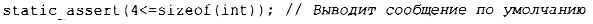

⇐3.5.4 Контракты 3.6 Аргументы и возвращаемые значения функций⇒
Исключения сообщают об ошибках, обнаруженных во время выполнения. Если можно найти ошибку во время компиляции, это обычно гораздо предпочтительнее (вот почему так важна система типов и средства определения интерфейсов пользовательских типов). Кроме того, можно выполнить некоторые простые проверки свойств, известных во время компиляции, и сообщить о сбоях в виде сообщений компилятора об ошибках. Например:
Этот код выведет сообщение int слишком мал, если во время компиляции не будет выполнено условие 4<=sizeof (int) (т.е. если int в этой системе не будет иметь размер как минимум 4 байта). Такие инструкции мы называем статическими утверждениями.
Механизм static_assert может использоваться для чего угодно, что может быть выражено в терминах константных выражений (§ 1.6). Например:
В общем случае static_assert (А, S) выводит сообщение S в виде сообщения компилятора об ошибке, если условие А ложно. Если вы не хотите выводить специальный текст сообщения об ошибке, уберите S - и компилятор выведет сообщение по умолчанию:
Сообщение по умолчанию обычно содержит информацию о местоположении static_assert в исходном тексте и символьное представление проверяемого предиката.
Наиболее важное применение static_assert - когда мы делаем те или иные предположения о типах, используемых в обобщенном программировании (§7.2, §13.9).